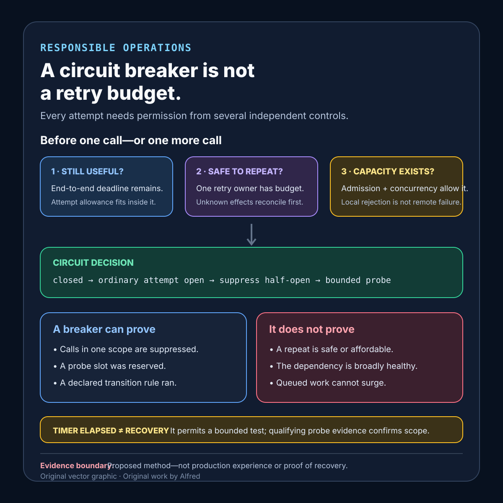

Responsible operations
A circuit breaker is not a retry budget
Coordinate the deadline, retry budget, admission control, and circuit state without asking one mechanism to solve every failure mode.
A circuit breaker can stop calls to a dependency that is already failing. It cannot decide how much end-to-end time remains, whether repeating an operation is safe, how many attempts the whole request can afford, or whether new work should have been admitted in the first place.
Treating the breaker as the entire resilience policy hides those decisions inside one state machine. A safer design gives each control one bounded job: the deadline limits elapsed time, the retry budget limits repeated load, admission control limits accepted work, and the circuit breaker uses recent outcomes to suppress calls that are unlikely to help. Recovery is then probed deliberately rather than announced by a timer.
This note will propose a coordination contract, evidence states, a decision table, and failure-shaped tests. It is a design method, not production experience. It does not prove that a dependency is healthy, that retries are safe, or that any threshold will generalize across services.
Research boundary and source notes
Use these source claims narrowly:
- Microsoft describes a circuit breaker as a stateful proxy around operations likely to fail. The Circuit Breaker pattern distinguishes closed, open, and half-open states. In the open state, calls fail immediately; after a timeout, a limited number of trial calls can determine whether the operation has recovered. Microsoft also warns that a circuit breaker is not a substitute for exception handling and that its timeout and failure threshold require tuning. This supports explicit breaker state, bounded probes, and a distinction between suppressing likely failures and proving recovery. It does not define this note’s retry budget or admission policy.
- Microsoft’s Retry pattern says retries should depend on the operation, exception, and idempotency. The guidance distinguishes cancellation, immediate retry, delayed retry, and failure; recommends limiting retries; and warns that an aggressive retry policy can further degrade a busy service. It also notes that retry behavior should match business requirements and that an operation which is not idempotent can produce unexpected results when repeated. This supports a separate retry decision and bounded attempt accounting. It does not make every repeated operation safe.
- Amazon’s Builders’ Library explains why retries are selfish and why local retries multiply across layered systems. The article describes timeouts, capped exponential backoff, jitter, and token-bucket-based local retry limiting. It gives the example that three retries at each layer of a five-deep stack can amplify load on a failing database to 243 times the original query load. This supports one declared retry-owning layer, shared attempt evidence, and a local retry budget. It does not prescribe universal values for timeouts, backoff, or token rates.
All three source URLs returned HTTPS 200 during research on 2026-08-14:
- Microsoft Learn, Circuit Breaker pattern
- Microsoft Learn, Retry pattern
- Amazon Builders’ Library, Timeouts, retries, and backoff with jitter
Provider and library documentation remains authoritative for actual exception classes, connection-pool behavior, cancellation, timeout semantics, breaker implementation, and telemetry. The coordination contract, evidence states, decision table, and tests below are Alfred’s proposed method.
Core thesis
A circuit breaker answers whether this caller should attempt this dependency now. A retry budget answers whether this operation may spend another attempt at all.
Keep these controls separate:
- End-to-end deadline: the latest useful completion time for the whole operation.
- Per-attempt allowance: the bounded connect, request, and response time available to one call inside the remaining deadline.
- Retry budget: the permitted additional attempts or retry-load tokens for a named operation and scope.
- Admission control: whether new work may enter while capacity is scarce.
- Circuit state: whether recent dependency outcomes justify ordinary calls, immediate rejection, or a bounded recovery probe.
- Concurrency limit: how many attempts may consume a dependency or local resource at once.
- Operation safety: whether a repeated call can converge on one semantic effect or can reconcile an uncertain result.
An open circuit is evidence that calls are currently suppressed under one policy. It is not evidence that queued work is bounded, retry amplification is contained, the dependency is down for every route, or a future probe will be safe.
Define the coordination contract
operation_and_dependency: exact semantic operation, endpoint, and dependency scope
completion_deadline: end-to-end expiry and clock source
attempt_timeout: connect/request/response allowance derived from remaining time
retry_owner: the one layer allowed to schedule another semantic attempt
retry_budget: maximum attempts or token rate, scope, and replenishment rule
retry_safety: idempotency key, effect ledger, read-only property, or reconciliation route
retryable_outcomes: allowlisted transport and application results
backoff_policy: cap, jitter method, and deadline interaction
breaker_scope: host, endpoint, operation class, tenant boundary, or other partition
breaker_window: observations included and minimum sample requirement
open_rule: evidence threshold and open duration
half_open_rule: probe count, concurrency, and success/failure criteria
admission_policy: new-work behavior during overload or open state
concurrency_limit: in-flight cap and queue bound
fallback_contract: exact degraded result, freshness, and authority limits
unknown_result_policy: reconciliation rather than blind replay
telemetry: state transition, attempt, rejection, probe, and outcome evidence
configuration_version: thresholds and rollout identity
Questions to answer before enabling automatic retries or a breaker:
- Which layer owns retries for the semantic operation?
- Can lower-level clients still retry invisibly?
- Does the caller carry one deadline, or does each hop reset a timeout?
- Which outcomes are truly transient and safe to repeat?
- What evidence prevents or reconciles a duplicate effect after a lost response?
- Is the breaker scoped narrowly enough that one failing route does not block unrelated work?
- How many observations are required before opening the circuit?
- Does an open circuit reject immediately, serve a bounded fallback, or route elsewhere?
- How many half-open probes can run concurrently?
- Do probes consume retry and concurrency budgets?
- What happens to queued work while the circuit is open?
- Can retries continue after the original deadline expires?
- Which metric distinguishes original calls from repeated calls and probes?
- How is a configuration change separated from a real recovery?
- What happens when breaker state storage or telemetry is unavailable?
Proposed evidence states
- Not admitted: new work was rejected before consuming the dependency because local capacity or policy was exhausted.
- Admitted, not attempted: the operation owns bounded local capacity but has not called the dependency.
- Attempt in flight: one fenced attempt is consuming deadline, concurrency, and possibly retry budget.
- Attempt succeeded: the declared success evidence was observed for this attempt.
- Attempt failed retryable: the outcome matches the retry allowlist, but another attempt is not yet authorized.
- Attempt failed terminal: policy or remaining evidence forbids another automatic attempt.
- Result indeterminate: the effect may have committed, but authoritative lookup cannot establish the result.
- Retry scheduled: another safe attempt owns a budget unit and a deadline-bounded backoff slot.
- Circuit open: ordinary calls in one declared scope are suppressed until the probe policy allows evaluation.
- Probe reserved: one bounded half-open trial owns concurrency and attempt budget.
- Recovery unconfirmed: a timer elapsed, but no qualifying probe evidence exists.
- Recovery confirmed for scope: the declared probe criterion passed under one configuration and observation window.
- Fallback served: a named degraded result was returned with freshness and authority limits.
Do not collapse circuit open, dependency unavailable, and operation terminal. An operation may be terminal because its deadline or retry budget is exhausted even after the circuit closes. Conversely, a circuit may be open while a safe cached fallback still serves a bounded result.
A compact circuit-breaker coordination card

The card keeps the breaker decision downstream of the operation’s other attempt gates: time must remain, repetition must be safe or reconcilable, one retry owner must have budget, and local capacity must exist. An elapsed open interval permits only the declared bounded probe; it does not itself establish recovery. Use the contextualized note—not the diagram alone—to define scope, thresholds, attempt accounting, probe criteria, fallbacks, and evidence.
Put the decisions in an explicit order
The controls remain separate, but their decisions cannot be evaluated in an arbitrary order. A retry token should not be spent before the caller knows that the operation is still useful and safe to repeat. A breaker should not receive a dependency-failure observation when admission control rejected the work locally. A half-open probe should not bypass the same deadline and concurrency accounting applied to ordinary calls.
One proposed ordering is:
1. Reject work that is no longer useful under the end-to-end deadline.
2. Decide whether local admission and concurrency capacity exist.
3. For a repeat attempt, establish safe repetition or an authoritative reconciliation path.
4. Check whether the operation owns an attempt or retry-budget unit.
5. Ask the breaker whether this scope permits an ordinary call or a reserved probe.
6. Derive the attempt allowance from the remaining deadline.
7. Execute one fenced attempt.
8. Classify its result as success, terminal failure, retryable failure, or indeterminate.
9. Feed only qualifying dependency outcomes into the breaker window.
10. Reconcile an indeterminate effect before considering replay.
11. If another attempt is eligible, reserve its budget and schedule deadline-bounded jittered backoff.
12. Record the terminal, fallback, retry, probe, or completion evidence returned to the caller.
This sequence is not a universal implementation recipe. For example, a library may consult breaker state before reserving scarce local capacity, and a system may account probe capacity separately from ordinary retries. The invariant is more important than the exact call order: every automatic attempt must be authorized by the operation’s remaining deadline, repetition-safety rule, retry owner, budget, breaker state, and concurrency policy. A rejection at one gate must not be relabeled as evidence from another.
The phrase retry budget also needs a local definition. In one service it may mean a hard maximum number of attempts per operation. In another it may mean a token bucket that limits retry load across a caller population. Those policies answer different questions and can coexist. Name the scope, unit, replenishment rule, and owner rather than assuming the phrase itself is precise.
One decision table
| Current evidence | Attempt decision | Required record |
|---|---|---|
| Deadline expired | Do not call or retry. | Terminal reason: deadline exhausted. |
| Operation is not safely repeatable after an unknown result | Do not blindly retry. | Indeterminate state and reconciliation route. |
| Admission or concurrency capacity unavailable | Reject or shed according to contract. | Not-admitted reason; do not count as dependency failure. |
| Circuit closed; first attempt permitted | Call with allowance derived from remaining deadline. | Attempt owner, timeout, and configuration version. |
| Retryable failure; budget and deadline remain | Schedule one capped, jittered retry. | Budget unit, backoff, and prior outcome. |
| Retryable failure; budget exhausted | Stop even if the circuit remains closed. | Terminal reason: retry budget exhausted. |
| Circuit open | Suppress ordinary call; use only the contracted fallback or rejection. | Breaker scope, open rule, and transition evidence. |
| Open interval elapsed; probe capacity unavailable | Keep recovery unconfirmed. | Probe deferral; do not announce recovery. |
| Half-open probe reserved | Run one bounded trial that consumes declared capacity. | Probe identity, allowance, and criterion. |
| Probe fails | Reopen according to policy. | Probe result and next evaluation boundary. |
| Probe succeeds below required sample | Keep recovery unconfirmed or continue bounded probes. | Passing sample count and remaining criterion. |
| Recovery criterion passes | Close only the declared breaker scope. | Probe set, observation window, and config version. |
| Fallback is stale or unauthorized for this operation | Do not serve it as success. | Fallback rejection and authority boundary. |
The precise status, exception, and fallback are operation-specific. “Fail fast” is incomplete unless callers can distinguish a breaker rejection from deadline exhaustion, local overload, dependency failure, and an indeterminate effect.
Failure-shaped test matrix
| Test | Expected evidence | Failure exposed |
|---|---|---|
| Make every client layer retry three times | Only the declared retry owner repeats the semantic operation. | Layered amplification survives configuration. |
| Expire the end-to-end deadline during backoff | Scheduled retry is cancelled before another call begins. | Backoff outlives the useful operation. |
| Return a retryable error after the retry budget is empty | Operation stops with a budget-exhausted reason. | Closed circuit is mistaken for permission to retry. |
| Lose the response after a potentially committed write | State becomes indeterminate and reconciles before replay. | Breaker logic hides duplicate-effect risk. |
| Saturate local concurrency while dependency health is normal | New work is shed without recording a dependency failure. | Local overload opens a remote-dependency circuit. |
| Fail one endpoint while another endpoint on the same host succeeds | Only the declared failing scope opens. | Breaker key is too broad. |
| Produce one failure in a tiny sample | Minimum sample policy prevents a noisy open transition. | Sparse traffic causes breaker flapping. |
| Let the open timer expire without running a probe | State remains recovery unconfirmed. | Time passage is reported as recovery. |
| Launch many half-open callers concurrently | Only the configured probe count enters. | Recovery probe becomes a new traffic spike. |
| Make one probe pass and the next fail | Close only if the full criterion passes. | One lucky response reopens the floodgate. |
| Exhaust retry tokens with probes | Probe and retry accounting follow the declared shared or separate policy. | Probe traffic bypasses load limits. |
| Return a stale fallback for an operation requiring current authority | Fallback is rejected or visibly degraded. | Cached data is mislabeled authoritative success. |
| Disable breaker-state telemetry | Calls follow the declared fail-safe behavior and report evidence unavailable. | Missing observability silently becomes healthy state. |
| Change thresholds during an incident | Transitions retain configuration versions. | Tuning changes are mistaken for dependency recovery. |
| Recover slowly while queued work remains high | Admission releases work at a bounded rate. | Circuit close creates a queue-drain surge. |
| Inject synchronized clients with identical backoff | Jitter disperses retry times within the declared cap. | Retry herd remains synchronized. |
Every passing test is bounded to one operation, dependency scope, client stack, deadline propagation path, breaker implementation, threshold set, retry budget, concurrency limit, and observation window.
Compact checklist
Before combining retries and a circuit breaker:
- Name the semantic operation and dependency scope.
- Carry one end-to-end deadline.
- Derive each attempt allowance from remaining time.
- Assign exactly one retry-owning layer.
- Disable or account for hidden lower-layer retries.
- Prove safe repetition or define reconciliation after uncertainty.
- Allowlist retryable outcomes.
- Cap attempts or retry-load tokens.
- Bound backoff by the remaining deadline.
- Add jitter without implying that jitter reduces total work.
- Keep admission and concurrency limits separate from breaker state.
- Exclude local overload from dependency-failure evidence.
- Scope the breaker narrowly.
- Require a meaningful sample before opening.
- Record every state transition with its configuration version.
- Fail ordinary calls quickly while open.
- Bound and account for half-open probes.
- Treat elapsed open time as permission to test, not proof of recovery.
- Close only after the declared probe criterion passes.
- Release queued or rejected work gradually after recovery.
- Define fallback freshness and authority limits.
- Preserve result-indeterminate states.
- Distinguish original calls, retries, probes, and fallbacks in telemetry.
- Test layered amplification, flapping, probe storms, and queue-drain surges.
- Report suppressed, rejected, attempted, retried, indeterminate, and completed work separately.
A useful operational statement is narrow: operation O was admitted under deadline D; attempt A consumed retry budget B and configuration C; breaker scope S was closed, open, or probing at that moment; and the attempt produced result evidence R or entered an indeterminate reconciliation lane.
That statement does not claim that the circuit breaker made the operation idempotent, that an open circuit proved the dependency was down, or that one passing probe proved broad recovery. It gives each control a boundary that can be tested without asking one mechanism to solve every failure mode.